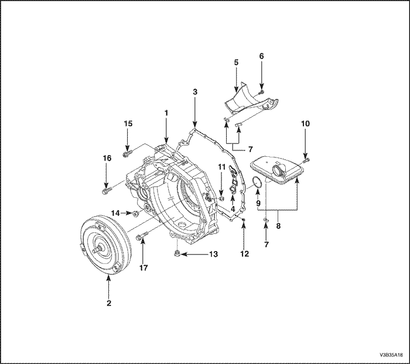
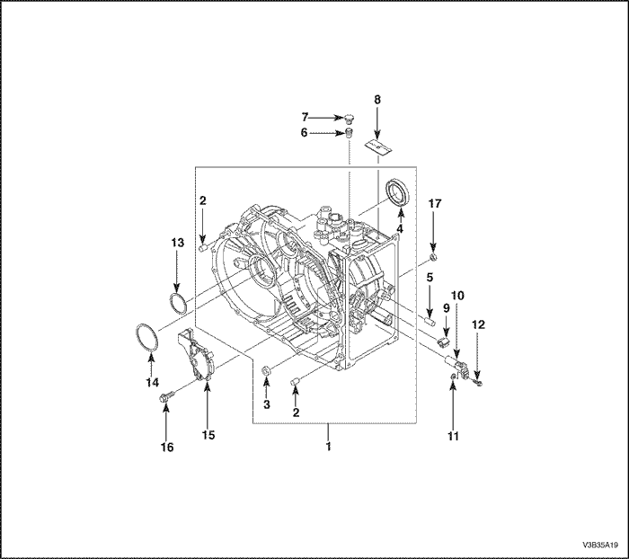
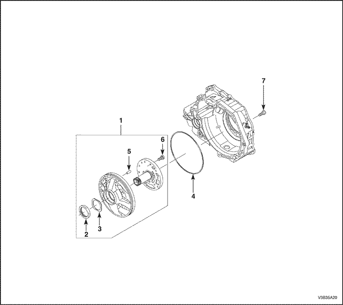
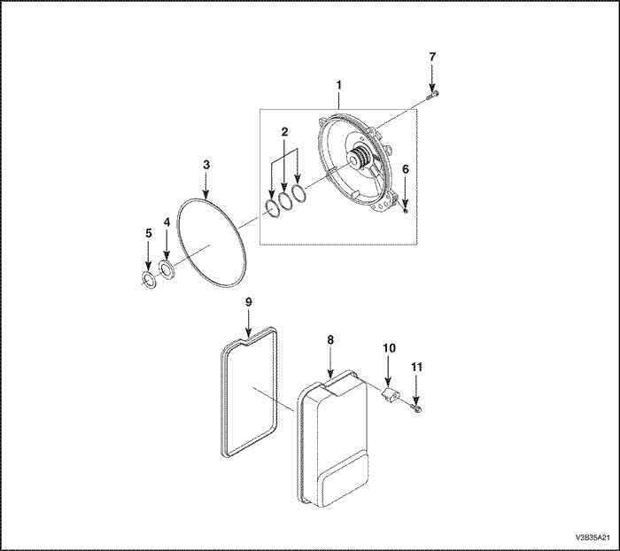
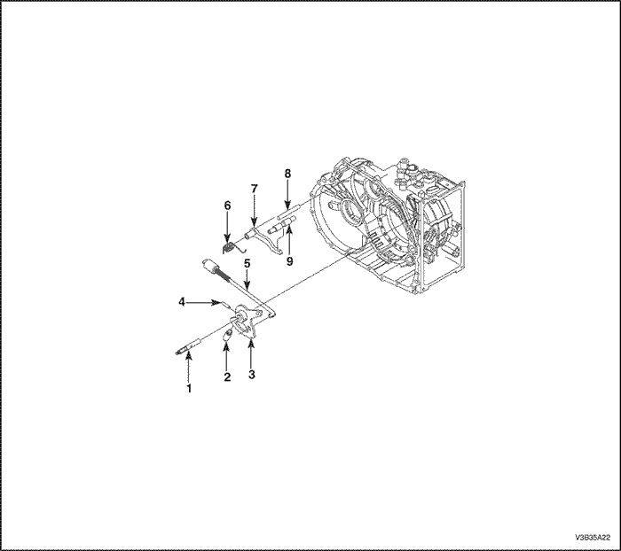
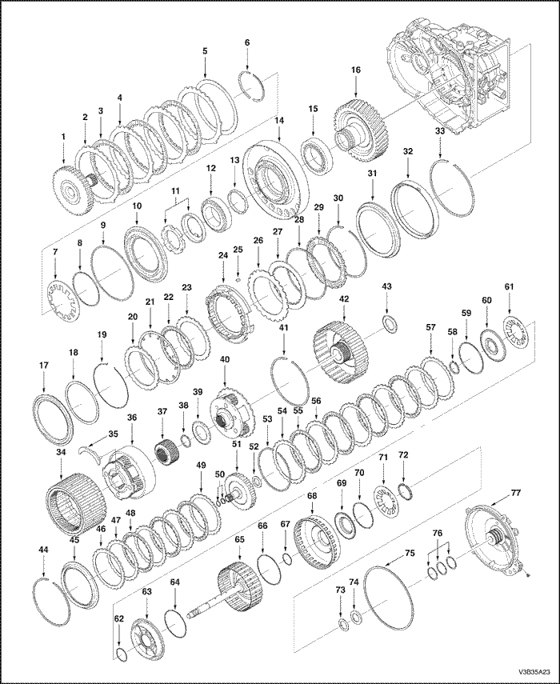
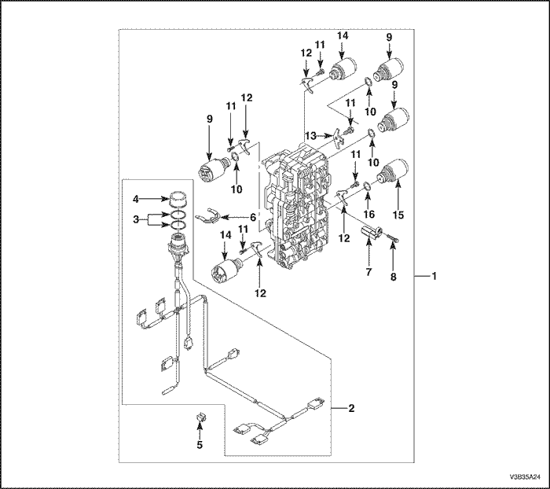
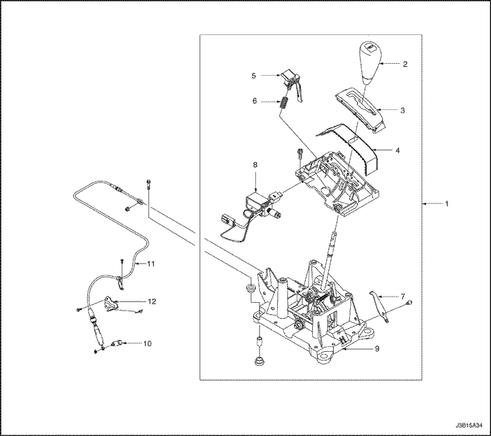
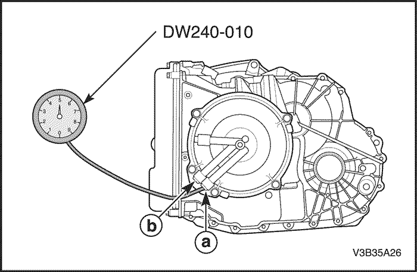
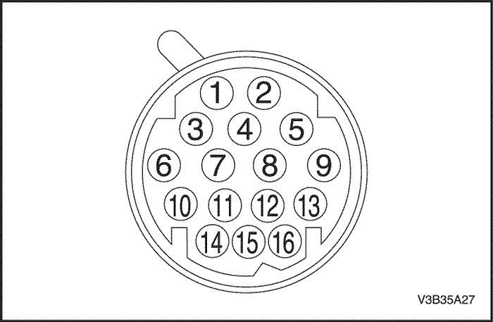

SECCIÓN
LOCALIZACIÓN DE COMPONENTES
Información para la identificación de la caja de cambios
- Número de pieza
- Número de serie
- Código del modelo
- País y empresa de fabricación
Convertidor de par



- Campana del convertidor de par
- Convertidor de par
- Junta del convertidor de par
- Junta de acero
- Placa deflectora de aceite
- Tornillo
- Imán
- Filtro del aceite
- Junta tórica
- Tornillo
- Tapón de presión
- Tapón de presión
- Tapón de drenaje de aceite
- Tapón de nivel de aceite
- Tornillo
- Tornillo
- Tornillo
Adaptador de pista

- Adaptador de pista
- Casquillo
- Retén de eje
- Retén del palier
- Manguito de cierre
- Tubo del respiradero
- Protector de manguito
- Placa tipo
- Terminal del cable
- Sensor de velocidad de salida
- Arandela
- Tornillo
- Suplemento
- Suplemento
- Selector de posición de estacionamiento/punto muerto
- Tornillo
- Manguito de cierre
Bomba de aceite

- Bomba de aceite
- Retén de la bomba de aceite
- Arandela
- Junta tórica
- Pasador
- Tornillo
- Tornillo
Tapa trasera y tapa del cárter de aceite

- Tapa trasera
- Segmento del pistón
- Junta tórica
- Cojinete de agujas
- Suplemento
- Tapón roscado
- Tornillo
- Cárter del aceite
- Junta del cárter del aceite
- Soporte del cárter del aceite
- Tornillo
Palanca de estacionamiento

- Eje del selector
- Casquillo tope
- Disco de retención
- Manguito de sujeción
- Barra de conexión
- Muelle de pata
- Trinquete
- Patilla
- Tornillo de soporte
Eje primario y cambio de velocidades

- Portadiscos F interior
- Plato del embrague F
- Disco del embrague F con forro
- Disco de embrague F exterior
- Disco de muelle
- Anillo tope
- Muelle de copa
- Junta tórica
- Junta tórica
- Pistón D
- Tuerca ranurada
- Cojinete de rodillos
- Anillo de ajuste
- Placa de apoyo
- Cojinete de rodillos
- Engranaje recto
- Pistón D
- Disco de muelle
- Anillo elástico de retención
- Plato del embrague D
- Muelle de copa
- Disco de embrague D con forro
- Disco de muelle
- Portadiscos C/D
- Chaveta de ajuste
- Disco de embrague C con forro
- Disco de embrague C exterior
- Muelle de copa
- Disco de embrague C con forro
- Anillo elástico de retención
- Pistón C
- Cilindro C
- Anillo elástico de retención
- Corona delantera
- Bandeja de aceite
- Engranaje planetario delantero
- Engranaje central delantero
- Anillo elástico de retención
- Cojinete de agujas
- Tren de engranajes planetarios trasero
- Anillo elástico de retención
- Engranaje central trasero
- Cojinete de agujas
- Anillo elástico de retención
- Pistón B
- Plato del embrague B
- Disco de embrague B exterior
- Disco de embrague B con forro
- Disco de muelle
- Segmento del pistón
- Portadiscos E interior
- Cojinete de agujas
- Anillo elástico de retención
- Disco E del plato del embrague
- Disco de embrague E con forro
- Disco de embrague E exterior
- Disco de muelle
- Anillo elástico de retención
- Junta tórica
- Retén de aceite
- Muelle de copa
- Junta tórica
- Pistón E
- Junta tórica
- Eje primario
- Junta tórica
- Junta tórica
- Pistón
- Retén de aceite
- Junta tórica
- Muelle de copa
- Anillo tope
- Suplemento
- Cojinete de agujas
- Junta tórica
- Segmento del pistón
- Tapa trasera
Caja de válvulas

- Caja de válvulas de control
- Cableado de la caja de válvulas
- Junta tórica
- Tapón
- Terminal del cable
- Clip de retención
- Sensor de velocidad de entrada
- Tornillo del tapón
- Válvula de solenoide
- Tornillo del tapón
- Placa de fijación
- Placa de fijación
- Tornillo del tapón
- Válvula de solenoide
- Válvula de solenoide
Palanca de control del cambio de velocidades

- Palanca de control del selector
- Pomo de la palanca del cambio
- Tapa
- Corredera tipo escalonado
- Botón del BTSI
- Muelle
- Muelle de posicionamiento
- Solenoide
- Placa base
- Palanca T/A
- Cable del selector
- Sujeción del cable
INFORMACIÓN DE DIAGNÓSTICO Y PROCEDIMIENTOS DE DIAGNÓSTICO
Conocimientos básicos necesarios
Para utilizar esta sección del manual de mantenimiento, hay que estar familiarizado con algunos conceptos básicos de electrónica. Esto ayudará a seguir los procedimientos de diagnóstico.
Aviso: La falta de conocimientos básicos sobre esta caja de cambios, a la hora de efectuar procedimientos de diagnóstico, puede dar lugar a diagnósticos incorrectos o deterioro de los componentes de la caja de cambios.
En ninguna circunstancia se debe intentar diagnosticar un problema de caja de cambios sin estos conocimientos básicos.
Aviso: Si se examina un cable con un instrumento afilado y no se sella correctamente después, el cable se oxidará y traerá como consecuencia un circuito abierto.
En la actualidad se dispone de scanners para pruebas de diagnóstico que permiten examinar cables de forma individual sin dañar su aislamiento. Estos dispositivos para pruebas no son caros, son fáciles de instalar y preservan permanentemente el cable contra la corrosión.
Herramientas especiales
Se necesitará un polímetro (DVM), un equipo para comprobación de circuitos, hilos o cables puente y un juego de manómetros para medir la presión en las tuberías.
El procedimiento para realizar las comprobaciones está diseñado para verificar el funcionamiento correcto de los componentes electrónicos de la caja de cambios.
Esto evitará el desmontaje innecesario de componentes de la caja de cambios.
Procedimiento de comprobación del funcionamiento
Comience con el procedimiento de comprobación del funcionamiento que facilite un perfil general de cómo realizar un diagnóstico de la caja de cambios automática. El procedimiento de comprobación siguiente indicará los pasos correctos para el diagnóstico del funcionamiento de la caja de cambios mediante la descripción de las comprobaciones básicas a realizar, haciendo referencia, a continuación, de los lugares específicos dónde efectuar dichas comprobaciones.
- Compruebe el nivel del aceite de acuerdo con el procedimiento de servicio del nivel del aceite.
- Compruebe la caja de cambios por si presentase fugas de líquido.
- Compruebe, por medio de su color y olor, si el aceite de la caja de cambios está quemado.
- Asegúrese de que la caja de cambios no esté en modo Limp Home (LHM).
- Compruebe los terminales de la batería y las conexiones a masa por si hubiera corrosión o conexiones flojas.
- Compruebe que el flujo del refrigerador no esté obstruido.
- Compruebe si todas las conexiones eléctricas están bien realizadas.
- Utilice una herramienta de diagnóstico a - bordo o un scanner para ver si se activa algún código de averías de la caja de cambios. Consulte la información "Códigos de diagnóstico de averías (DTCs)" correspondiente y repare el vehículo como se indique. Después de la reparación, efectúe la prueba en carretera y verifique que el código no vuelva a activarse.
- Efectúe las comprobaciones eléctricas y las de cambio de velocidad en el garaje.
- Ejecute el procedimiento para la prueba en carretera que aparece en esta sección.
- Compruebe el aceite y verifique la existencia de partículas metálicas o cualquier otro tipo de suciedad en el cárter de aceite.
Procedimiento de comprobación de la presión de funcionamiento
La caja de cambios automática 4HP 16 utiliza una bomba de aceite de tipo trocoidal para generar presión hidráulica y un solenoide de control de presión (solenoide 1) para controlar dicha presión en la válvula reguladora de presión una vez que el aceite ha salido de la bomba. El solenoide de control de presión de la caja de cambios se controla mediante una señal eléctrica que va de 0 a 12 voltios; los 12 voltios corresponden a la presión mínima de funcionamiento (aprox. entre 6,2 y 8,6 bares (89,9 y 124,7 lbs/pulg2)), y la tensión de 0 voltios corresponde a la presión máxima de funcionamiento (aprox. 15,3 a 17,4 bares (221,9 y 252,4 lbs/pulg2)) en toda la gama de velocidades.
Las presiones de funcionamiento se calculan para dos juegos de gamas de velocidades: directa - estacionamiento - punto muerto y marcha atrás. Esto permite que la presión de funcionamiento de la caja de cambios sea la apropiada para las diferentes necesidades según la gama de velocidades:
Gama de velocidades | Solenoide 1 | RPM | Presión |
Directa, Marcha atrás | Off | 2,500 | 221,9~252,4 psi (15,3~17,4 bar) |
On | 2,500 | 17,4~269,8 psi (1,2~18,6 bar) |
Punto muerto, Estacionamiento | Off | 2,500 | 221,9~252,4 psi (15,3~17,4 bar) |
On | 2,500 | 89,9~269,8 psi (6,2~18,6 bar) |
Antes de comprobar la presión de funcionamiento, verifique que el solenoide de control de la presión reciba la señal eléctrica correcta del TCM:
- Instale un scanner.
- Ponga en marcha el motor y aplique el freno de estacionamiento.
- Compruebe si hay almacenado algún código de diagnóstico de averías del solenoide de control de presión, así como cualquier otro código de diagnóstico de averías.
- Repare el vehículo si fuera necesario.
Compruebe: - El nivel de aceite
- El varillaje manual.
Instale o conecte: - Un scanner.
- Un manómetro para medir la presión de aceite, en el orificio de la presión de funcionamiento (orificios del embrague B o E en la carcasa de la caja de cambios)

- Coloque el selector de velocidades en la posición de estacionamiento y aplique el freno de estacionamiento.
- Ponga en marcha el motor y deje que se caliente a ralentí.
- Acceda al "Modo de control del solenoide 1" del scanner.
- Conecte/desconecte el solenoide 1, acelere el motor hasta 2.500 rpm y lea la presión de funcionamiento en cada una de las velocidades.
- Compare los datos con la siguiente tabla de presiones de funcionamiento en directa-estacionamiento-punto muerto y marcha atrás.
Aviso: La duración total de la prueba no debe superar los dos minutos, o podrían producirse daños en la caja de cambios.
Precaución: El freno debe permanecer aplicado todo el tiempo para evitar movimientos inesperados del vehículo.
Si las lecturas de la presión difieren mucho de la tabla de presiones, consulte las tablas de diagnóstico incluidas en esta sección.
Aviso: El embrague puede sufrir daños.
El scanner sólo puede controlar el solenoide de control de la presión en las posiciones de estacionamiento y punto muerto, con el vehículo parado.
Esto protege a los embragues de presiones extremadamente altas o bajas en las gamas de directa o marcha atrás.
Gama de velocidades | Solenoide | Presión de línea | Puerto B | Puerto E |
Estacionamiento / punto muerto | ON | BAJA | 90~124,7 psi (6,2~8,6 bar) | . |
OFF | ALTA | 221,9~252,3 psi (15,3~17,4 bar) | . |
Marcha atrás | ON | BAJA | 90~124,7 psi (6,2~8,6 bar) | . |
OFF | ALTA | 221,9~252,3 psi (15,3~17,4 bar) | . |
Directa | ON | BAJA | . | 90~124,7 psi (6,2~8,6 bar) |
OFF | ALTA | . | 137,7~162,4 psi (9,5~11,2 bar) |
3 | ON | BAJA | 90~124,7 psi (6,2~8,6 bar) | 90~124,7 psi (6,2~8,6 bar) |
OFF | ALTA | 221,9~252,3 psi (15,3~17,4 bar) | 137,7~162,4 psi (9,5~11,2 bar) |
2 | ON | BAJA | . | 90~124,7 psi (6,2~8,6 bar) |
OFF | ALTA | . | 137,7~162,4 psi (9,5~11,2 bar) |
1 | ON | BAJA | 90~124,7 psi (6,2~8,6 bar) | . |
OFF | ALTA | 221,9~252,3 psi (15,3~17,4 bar) | . |
Diagnóstico del plato del embrague
Platos de material compuesto
Seque los platos y compruebe la presencia de las siguientes deficiencias:
- Picado
- Desescamado
- Desgaste
- Aspecto vidrioso
- Grietas
- Carbonizado
Virutas o partículas de metal incrustadas en los forros
Sustituya el plato de material compuesto que muestre cualquiera de estas deficiencias.
Platos de acero
Seque los platos con un trapo y compruebe si se han decolorado por el calor. Si las superficies están lisas, incluso si se observan manchas de color, se puede seguir utilizando el plato. Si el plato está descolorido por el calor en algunas zonas o si la superficie está rayada, sustitúyalo.
Importante: Si el embrague muestra evidencias de calor extremo o de haberse quemado, sustituya los muelles.
Causas de platos de embrague quemados
Lo siguiente pueden provocar que se quemen los platos de embrague:
- Uso incorrecto de los platos de embrague.
- Presencia de refrigerante del motor en el aceite de la caja de cambios.
- Un pistón del embrague agrietado.
- Retenes dañados o pérdida de los mismos.
- Baja presión de funcionamiento.
- Averías en las válvulas.
- Falta de planitud en la cara de la caja de válvulas. - Porosidad entre canales. - Clips de los casquillos de las válvulas mal montados. - Las bolas antirretorno están mal colocadas. - Las arandelas de junta están desgastadas o dañadas.
Hay refrigerante del motor en la caja de cambios
Aviso: El anticongelante deteriora las juntas tóricas y la cola utilizada para pegar el material del embrague al plato de presión. Ambas circunstancias pueden dañar la caja de cambios.
Lleve a cabo lo descrito en los siguientes pasos en caso de fugas en el refrigerador de aceite que permitan que el refrigerante del motor entre en la caja de cambios:
- Dado que el refrigerante atacará al material de los retenes, provocando fugas, desmonte la caja de cambios y sustituya todos los retenes de goma.
- Como el material de los forros puede separarse de la parte central de acero, sustituya los conjuntos de platos de embrague de material compuesto provistos de forros.
- Sustituya todas las piezas de nylon, incluso las arandelas.
- Sustituya el convertidor del par.
- Limpie concienzudamente y monte de nuevo la caja de cambios, utilizando un filtro de aceite y juntas nuevos.
- Lave las tuberías del refrigerador después de la correcta reparación o sustitución de la caja de cambios.
Lavado del refrigrador y prueba de caudal
Aviso: Se debe lavar el refrigerador siempre que se reciba una caja de cambios para su mantenimiento. Esta limpieza es esencial para el montaje del SRTA, durante una revisión general, siempre que se sustituya la bomba o el convertidor de par o cuando se sospeche que el aceite haya estado contaminado.
Después de llenar de aceite la caja de cambios, ponga en marcha el motor y déjelo en marcha durante 30 segundos. Esto eliminará la humedad residual del refrigerador de aceite. Desconecte la tubería de retorno de la caja de cambios y observe el caudal con el motor en marcha. Si el caudal es insuficiente, compruébelo desconectando la tubería de alimentación del refrigerador. Observe el caudal con el motor en marcha.
- Si el caudal desde la línea de retorno del refrigerador a la caja de cambios es insuficiente, compruebe la tasa de caudal desde la línea de alimentación hasta el refrigerador. Hay alguna obstrucción en la caja de cambios o en el refrigerador.
- Si el caudal de la tubería de alimentación de la caja de cambios al refrigerador es insuficiente, la caja de cambios es la causa del problema de la falta de caudal de aceite.
- Si el caudal de la tubería de alimentación de la caja de cambios al refrigerador es insuficiente, pero el caudal de la tubería de retorno del refrigerador a la caja de cambios es insuficiente, compruebe las tuberías y racores del refrigerador. Repita el procedimiento de lavado del refrigerador. Si el caudal siguiera siendo insuficiente, sustituya el refrigerador.
Procedimiento de servicio para comprobar el nivel de aceite de la caja de cambios
Este procedimiento se emplea cuando se efectúa alguna comprobación relacionada con el nivel de aceite del vehículo. Si el nivel de aceite es bajo, dará lugar al patinaje del embrague y la pérdida de la posibilidad de efectuar cambios en las gamas de directa / marcha atrás o un retraso en la selección de velocidades en dichas gamas cuando el vehículo esté frío.
Se comprueban primero los mensajes de diagnóstico de la caja de cambios en el scanner. Si el nivel de aceite es bajo, es posible registrar un fallo en la señal de la velocidad del vehículo.
Se someterá al vehículo a una prueba de conducción para determinar si hay un retraso anormal cuando se seleccionan las gamas de directa o marcha atrás o si se sufre pérdida de tracción. Uno de los síntomas de que hay un nivel bajo de aceite en la caja de cambios es la pérdida momentánea de tracción cuando el vehículo toma una curva. Asimismo, cuando dicho nivel es bajo, se puede producir una pérdida de tracción cuando la temperatura del aceite de la caja de cambios es baja.
Cuando añada o cambie el líquido de la caja de cambios, utilice únicamente ESSO LT 71141 o TOTAL ATF H50235. Si utiliza un líquido inadecuado, puede provocar una degradación acusada en el rendimiento y vida útil de la caja de cambios
Procedimiento de diagnóstico del nivel de aceite
- Si el vehículo se encuentra a la temperatura de funcionamiento, deje que se enfríe durante dos horas, pero no más de cuatro horas. O si el vehículo se encuentra en frío, arranque el motor y déjelo al ralentí durante aproximadamente 5 minutos (825~875 rpm), si es posible, conduzca el vehículo unos cuantos kilómetros (N-D, N-R, cambia hasta sedunda). Esto permitirá que la caja de cambios esté dentro del ranto de temperaturas correcta. El nivel del aceite de la caja de cambios debe comprobarse a una temperatura entre 20 y 45°C (68 y 113°F).
Precaución: El desmontaje del tapón de llenado cuando el aceite de la caja de cambios está caliente puede provocar lesiones si sale el aceite por la abertura de llenado.
- Desconecte los accesorios, especialmente el aire acondicionado y el calefactor.
- Con el pedal de freno pisado, desplace la palanca de cambios por toda la gama de velocidades, deteniéndose algunos segundos en cada una. vuelva a colocar la palanca de cambio de marchas en la posición P (Estacionamiento). Apague el motor.
- Estacione el vehículo en un elevador, foso de comprobación o superficie elevada similar. El vehículo debe nivelarse para obtener medidas correctas del nivel de aceite.
- Coloque un recipiente bajo el tapón de llenado de aceite.
- Elimine la suciedad en la zona que rodea al tapón de llenado de aceite.
Quite el tapón de llenado de aceite. Limpie dicho tapón y compruebe que la junta tórica no esté dañada. - Si se sale el aceite por el orificio de llenado, puede deberse a que se haya llenado demasiado la caja de cambios. Cuando el aceite deja de salir, su nivel es el correcto. Coloque el tapón de llenado de aceite y apriételo hasta 45 N•m(34 lb-pie).
- Si no se sale el aceite por el orificio de llenado, el nivel podría estar bajo. Baje el vehículo y póngalo en marcha en P (estacionamiento) con el freno de estacionamiento y los frenos de servicio puestos. Con el motor a ralentí, desplace la palanca de cambios a lo largo de todas las gamas de velocidades, deteniéndose unos segundos en cada una y añadiendo aceite hasta que se siente la selección de las velocidades. Vuelva a colocar la palanca de cambio de marchas en la posición P (Estacionamiento). A continuación, apague el motor y eleve el vehículo. Compruebe si el nivel del aceite alcanza la parte inferior del orificio de llenado. Si no es así, añada una pequeña cantidad de aceite hasta alcanzar el nivel correcto. Coloque el tapón de llenado de aceite y apriételo hasta 45 N•m(34 lb-pie).
- Una vez completado este procedimiento, seque bien la zona que rodea al tapón de llenado con un trapo o una toalla de taller.
Ajuste del nivel de aceite después del servicio
- Según el procedimiento de mantenimiento efectuado, añada las cantidades siguientes de aceite por el orificio del tapón de llenado antes del ajuste del nivel:
- Desmontaje del cárter inferior: 4 litros (4,23 cuartos)
- Desmontaje del convertidor: 2 litros (2,11 cuartos)
- Revisión general 6,9 ± 0,2 litros (7,3 ± 0,2 cuartos)
- Desmontaje del tapón de drenaje de aceite: 4 litros (4,23 cuartos)
- Siga los pasos 1 a 4 del procedimiento de diagnóstico del nivel de aceite.
- Elimine la suciedad en la zona que rodea al tapón de llenado de aceite.
Quite el tapón de llenado de aceite. Limpie dicho tapón y compruebe que la junta tórica no esté dañada. - Baje el vehículo, con el tapón de llenado todavía quitado, y póngalo en marcha en P (estacionamiento) con el freno de estacionamiento y los frenos de servicio aplicados. Con el motor a ralentí, desplace la palanca de cambios a lo largo de todas las gamas de velocidades, deteniéndose unos segundos en cada una y añadiendo aceite hasta que se siente la selección de las velocidades. A continuación, añada una cantidad adicional de aceite de 0,5 litros. Vuelva a colocar la palanca de cambio de marchas en la posición P (Estacionamiento). A continuación, apague el motor y eleve el vehículo. Coloque el tapón de llenado de aceite y apriételo hasta 45 N•m (34 lb-pie).
- Conduzca el vehículo entre 3,5 y 4,5 kilómetros (2,2 y 2,8 millas), con el acelerador pisado ligeramente, de forma que el motor no sobrepase las 2.500 rpm. Esto debería provocar que la temperatura de la caja de cambios estuviese situada entre 20 y 45°C (entre 68 y 11°F). Con el freno aplicado, mueva la palanca de cambios por todas las marchas, parando unos segundos en cada marcha con el motor al ralentí.
- Vuelva a colocar la palanca de cambio de marchas en la posición P (Estacionamiento). Apague el motor y eleve el vehículo con la grúa, si fuese aplicable, asegurándose de que el vehículo está nivelado. Cuando hayan transcurrido tres minutos desde que se haya parado el motor, quite el tapón de llenado. Compruebe si el nivel del aceite alcanza la parte inferior del orificio de llenado. Si no es así, añada una pequeña cantidad de aceite hasta alcanzar el nivel correcto. Coloque el tapón de llenado de aceite y apriételo hasta 45 N•m (34 lb-pie).
- Limpie la zona que rodea al tapón de llenado con un trapo o una toalla de taller.
Diagnóstico y reparación de fugas de aceite
La causa de la mayoría de las fugas externas puede localizarse y repararse, en general, con la caja de cambios montada en el vehículo.
Métodos de localización de fugas
Método general
- Verifique si la fuga es de aceite de la caja de cambios.
- Limpie a fondo el área con supuestas fugas.
- Conduzca el vehículo durante unos 25 km (15 millas) o hasta que la caja de cambios alcance la temperatura normal de funcionamiento (88°C, 190°F).
- Estacione el vehículo sobre un cartón o papel limpio.
- Pare el motor y busque manchas de aceite en el papel.
- Efectúe las reparaciones necesarias para corregir la fuga.
Método de pulverización
- Limpie a fondo el área con supuestas fugas.
- Aplique polvo en aerosol (polvo podológico) en la zona donde se sospecha que haya una fuga.
- Conduzca el vehículo durante unos 25 km (15 millas) o hasta que la caja de cambios alcance la temperatura normal de funcionamiento (88°C, 190°F).
- Apague el motor.
- Inspeccione el área de supuestas fugas y siga la ruta de aceite por el polvo para encontrar la fuente de la fuga.
- Haga las reparaciones necesarias.
Método del tinte y la luz negra
- Añada un tinte a la caja de cambios por su tapón de llenado de aceite. Siga las recomendaciones del fabricante respecto a la cantidad de tinte a utilizar.
- Utilice la luz negra para encontrar la fuga de aceite.
- Haga las reparaciones necesarias.
Reparación de las fugas de aceite
Una vez encontrado el punto por donde se produce la fuga, debe determinarse su origen. La lista siguiente describe las causas potenciales de las fugas:
- Elementos de fijación no apretados según el par especificado.
- Roscas y taladros de los elementos de sujeción sucios u oxidados.
- Juntas, retenes o manguitos mal colocados, deteriorados o desgastados.
- Alojamientos de los retenes y caras de asiento de las juntas deteriorados, deformados o rayados.
- Cojinete flojo o desgastado que provoca un cierre excesivo o un desgaste del manguito.
- Porosidad de la caja o de los componentes.
- Nivel de aceite demasiado alto.
- Tubo respiradero dañado u obstruido.
- Presencia de agua o refrigerante en el aceite.
- Orificios auxiliares de drenaje de aceite obstruidos.
Pruebas eléctricas en garaje del cambio de marchas
Esta prueba preliminar debe realizarse antes de efectuar una prueba en carretera o sobre un elevador, para asegurar que las entradas electrónicas de control estén conectadas y funcionen. Si no se efectúa la comprobación de estas entradas antes de accionar la caja de cambios, una deficiencia eléctrica sencilla podría ser erróneamente diagnosticada como una deficiencia importante de la caja de cambios.
El scanner proporciona información valiosa por lo que debe utilizarse para realizar un diagnóstico preciso de la caja de cambios automática.
- Ponga el selector de velocidades en la posición P (estacionamiento) y aplique el freno de estacionamiento.
- Conecte un scanner al terminal del conector de diagnóstico (DLC).
- Ponga en marcha el motor.
- Encienda el scanner.
- Verifique que se activan las señales correctas. Entre estas señales se pueden incluir:
- VELOCIDAD DEL MOTOR
- VELOCIDAD DEL VEHÍCULO
- POSICIÓN DEL ACELERADOR
- SITUACIÓN DE LAS VELOCIDADES DE LA CAJA DE CAMBIOS
- POSICIÓN DE LA PALANCA DE CAMBIOS
- TEMPERATURA DEL ACEITE DE LA CAJA DE CAMBIOS
- POSICIÓN MEMORIZADA DEL ACELERADOR CERRADO
- POSICIÓN MEMORIZADA DEL ACELERADOR ABIERTO
- CONOCIMIENTO DE LA POSICIÓN DE PEDAL DEL ACELERADOR CERRADO
- CONOCIMIENTO DE LA POSICIÓN DE PEDAL DEL ACELERADOR ABIERTO
- ESTADO DEL COMPRESOR DEL A/A
- INTERRUPTOR DE MODO
- TENSIÓN DE LA POSICIÓN DEL ACELERADOR
- TENSIÓN DE LA POSICIÓN DE LA PALANCA DE CAMBIOS
- TENSIÓN DE LA TEMPERATURA DEL ACEITE DE LA CAJA DE CAMBIOS
- INTERRUPTOR DEL A/A
- TENSIÓN DEL INTERRUPTOR DE MODO
- TENSIÓN DE LA BATERÍA
- Controle la señal del estado del compresor del A/A mientras pulsa el interruptor del A/A.
- El estado del compresor del A/A debe encenderse cuando se pulse el interruptor del A/A y apagarse cuando se pulse de nuevo este interruptor.
- Controle la señal de posición de la palanca de cambios y pase la palanca por toda la gama de velocidades.
- Verifique que el valor de la posición de la palanca de cambios coincide con la velocidad indicada en la consola o panel de instrumentos.
- Los cambios de marcha deben ser inmediatos pero no bruscos.
- Ponga la palanca de cambios en la posición de punto muerto y controle la señal de posición del acelerador a la vez que aumenta y disminuye las revoluciones del motor con el pedal del acelerador.
- La posición del acelerador debe aumentar con las revoluciones del motor.
Procedimiento de prueba en carretera
- Efectúe la prueba en carretera con un scanner.
- Esta prueba se debe efectuar cuando lo permitan las condiciones de la carretera y el tráfico.
- Respete todas las normas de circulación.
El TCM calcula los puntos de cambio a velocidad superior basándose principalmente en dos datos: el ángulo del acelerador y la velocidad del vehículo. Cuando el TCM desea que se cambie, se envía una señal eléctrica a los solenoides de cambio que, a su vez, desplazan las válvulas para efectuar el cambio ascendente.
Las tablas de velocidades de cambio hacen referencia al ángulo del acelerador y no al "acelerador al mínimo" o "wot" (acelerador totalmente abierto) para hacer que la medición de velocidad de cambio sea más uniforme y precisa. Para controlar el ángulo del acelerador, se debe utilizar un scanner. Algunos scanners se han programado para registrar información sobre el punto de cambio. Consulte el manual de introducción para comprobar si esta prueba está disponible.
Procedimiento de los cambios ascendentes
Con el selector de velocidades en la posición directa (D).
- Consulte la tabla de selección de velocidades que aparece en esta sección y elija un porcentaje para el ángulo del acelerador del 10% ó del 25%.
- Ajuste el scanner para controlar el ángulo del acelerador y la velocidad del vehículo.
- Acelere hasta el ángulo elegido y mantenga constante el acelerador.
- A medida que la caja de cambios realiza los cambios ascendentes, anote los cambios de velocidad ordenados y la velocidad de selección en la:
- Segunda.
- Tercera.
- Cuarta.
Importante: Las velocidades de selección pueden variar en la respuesta a los controles electrónicos debido a ligeros retrasos hidráulicos. También les afecta un cambio del tamaño original de los neumáticos del equipo.
Anote cuándo embraga el TCC. Esta acción debe producirse en cuarta. Si la aplicación del embrague no se refleja en un descenso de las rpm, consulte la información que aparece en el "Diagnóstico del embrague de bloqueo" de esta sección.
La aplicación del embrague de bloqueo no debe producirse a menos que la caja de cambios haya alcanzado una temperatura mínima de funcionamiento de 8°C (46°F) TRANS TEMP y la temperatura del refrigerante del motor sea de 50°C (122°F).
- Repita los pasos 1 a 4 utilizando diversos ángulos del acelerador.
Cambio descendente a admisión media
Con el vehículo a una velocidad comprendida entre los 55 y los 65 km/h (34 y 40 mph) en cuarta, aumente el ángulo del acelerador a más del 50%.
Verifique que:
- Se aplica el TCC.
- La caja de cambios reduzca a tercera velocidad.
- El solenoide 1 cambie de conectado a desconectado.
- Se desconecte el solenoide 2.
Cambio descendente a admisión plena
Con el vehículo a una velocidad comprendida entre los 55 y los 65 km/h. (34 a 40 mph) en cuarta, aumente el ángulo del acelerador hasta su posición máxima (100%).
Verifique que:
- Liberación del TCC.
- La caja de cambios reduzca a segunda inmediatamente.
- El solenoide 1 cambie de conectado a desconectado
- Se desconecte el solenoide 2.
Cambios descendentes manuales
- A una velocidad de 60 km/h (40 mph) en cuarta velocidad, libere el acelerador mientras pasa el selector de velocidades a tercera (3). Observe que:
- La caja de cambios reduzca a tercera inmediatamente.
- El motor desacelere el vehículo.
- Vuelva a colocar el selector de velocidades en directa (D) y acelere hasta 50 km/h (31 mph). Libere el pedal del acelerador y pase el selector de velocidades a primera manual (1) y observe que:
- La caja de cambios reduzca a segunda inmediatamente.
- El motor desacelere el vehículo
Aviso: A velocidades altas, se producirá una relación de cambio de primera-tercera manual como característica de seguridad de cambio ascendente. No intente efectuar este cambio.
Cambios descendentes durante la marcha por inercia
- Con el selector de velocidades en superdirecta (D), acelere hasta cuarta con el TCC aplicado.
- Suelte el pedal del acelerador, pise ligeramente el freno y observe que:
- Liberación del TCC.
- Se produzcan reducciones a las velocidades indicadas en la tabla de velocidades de selección.
Selección de la gama de velocidades manuales
Los cambios ascendentes en las gamas de velocidades manuales están controlados por los solenoides de cambio. Efectúe las comprobaciones siguientes acelerando a incrementos del 25 por ciento del sensor de TP.
Tercera manual (3)
- Con el vehículo parado, desplace el selector de velocidades a tercera manual (3) y acelere para observar que se produzca el:
Cambio 1-2 Cambio 2-3 Segunda manual (2)
- Con el vehículo parado, desplace el selector de velocidades a segunda manual y acelere para observar que se produzca el:
Cambio 1-2 - Acelere hasta 40 km/h. (25 mph) y observe que:
- No se produzca el cambio de segunda a tercera. - No embrague el TCC. Primera manual (1)
- Con el vehículo parado, mueva el selector de velocidades a primera manual (1). Acelere hasta 30 km/h (19 mph) y observe que:
- No se produzca ningún cambio ascendente. Marcha atrás (R)
- Con el vehículo parado, desplace el selector de velocidades a la posición R (marcha atrás) y observe que:
- El solenoide 1 esté desconectado - El solenoide 2 esté desconectado Utilice un scanner para ver si se ha activado algún código de averías de la caja de cambios. Consulte el apartado
"Códigos de diagnóstico de averías" de esta sección y repare el vehículo como se indica. Después de la reparación, efectúe la prueba sobre elevador y verifique que el código no vuelva a activarse.
Si la caja de cambios no está funcionando correctamente y no se activan códigos de averías, podría haber una avería intermitente. Compruebe si hay daños o terminales flojos en todas las conexiones eléctricas. Hay que efectuar, asimismo, un proceso de caza de averías que puede ayudar a encontrar una deficiencia intermitente que no se produzca durante el tiempo suficiente para que se active un código.
Se puede consultar el apartado "Diagnóstico de los componentes electrónicos" de esta sección para familiarizarse con las averías de la caja de cambios provocadas por fallos eléctricos en la misma.
Si no se han activado códigos de averías y se sospecha que la avería es hidráulica, efectúe una comprobación en carretera con el vehículo.
Diagnóstico del embrague de bloqueo del convertidor de par (TCC)
Para realizar una diagnóstico adecuado del sistema del embrague de bloqueo (TCC), efectúe primero todas las comprobaciones eléctricas y luego las hidráulicas.
El TCC se aplica mediante presión de aceite controlada por un solenoide que se encuentra dentro de la caja de válvulas. El solenoide se activa cerrando un circuito eléctrico a través de una combinación de interruptores y sensores.
Procedimiento de comprobación del funcionamiento
Compruebe:
- Monte un tacómetro o un scanner.
- Ponga en marcha el vehículo hasta que se alcance la temperatura de régimen correcta.
- Conduzca el vehículo entre 80 y 88 km/h (50 y 55 mph) pisando ligeramente el acelerador (carga de carretera).
- Manteniendo la posición del acelerador, pise ligeramente el freno y compruebe que se libere el TCC y se produzca un ligero incremento de la velocidad del motor (rpm).
- Suelte el freno lentamente, acelere y compruebe que se vuelva a aplicar el embrague de bloqueo y que disminuya ligeramente la velocidad del motor (rpm).
Evaluación del convertidor de par
Estátor del convertidor de par
El rodillo del estátor del convertidor de par puede tener uno o dos tipos diferentes de fallos:
A. El conjunto del estátor gira libre en ambas direcciones.
B. El conjunto de estátor siempre permanece bloqueado.
Anomalía A: aceleración deficiente, baja velocidad
El coche tiende a tener una aceleración deficiente a partir de una parada. A velocidades superiores entre 50 y 55 km/h (30 y 35 mph) es posible que el vehículo se comporte con normalidad. Si se observa una aceleración defectuosa, en primer lugar, se deberá determinar que el sistema de escape no esté bloqueado y que la caja de cambios esté en primera al poner en marcha el vehículo.
Si el motor acelera libremente hasta conseguir unas revoluciones altas en N (punto muerto), se puede dar por sentado que el motor y el sistema de escape se encuentran en condiciones normales. La comprobación de un funcionamiento defectuoso en las gamas de "directa" y "marcha atrás" ayudará a determinar si el estátor gira libre en todo momento.
Anomalía B: aceleración defectuosa, alta velocidad
Revoluciones del motor y velocidad del coche limitadas o restringidas a velocidades altas. El rendimiento, cuando se acelera desde una parada, es normal. El motor se puede recalentar. Un examen visual del convertidor puede revelar un color azul producido por el recalentamiento.
Si se ha desmontado el convertidor, se puede efectuar una comprobación del embrague de rodillos del estátor, introduciendo dos dedos en la pista interior estriada de dicho embrague y tratando de hacerlo girar en el sentido de las agujas del reloj, aunque no gire o resulte extremadamente difícil hacerlo girar en el sentido contrario.
Ruido
Se suele detectar un silbido en el convertidor de par cuando el vehículo se detiene y la caja de cambios está en "Directa" o en "Marcha atrás". El ruido aumentará cuando aumenten las rpm. El ruido cesa cuando el vehículo empieza a moverse o cuando se aplica el embrague del convertidor de par, debido a que las dos mitades del convertidor giran a la misma velocidad.
Efectúe una prueba de calado del motor para asegurarse de que el ruido procede realmente del convertidor:
- Pise el freno.
- Ponga el selector de velocidades en la posición de "directa".
- Pise el acelerador hasta alcanzar aproximadamente 1.200 rpm durante no más de seis segundos.
Aviso: Si se pisa el acelerador durante más de 6 segundos, se puede dañar la caja de cambios.
El ruido en el convertidor de par aumentará bajo esta carga.
Importante: No debe confundirse este ruido con el gemido de la bomba, que normalmente se percibe en las posiciones P (estacionamiento), N (punto muerto) y el resto de gamas de velocidades. El silbido de la bomba varía con las gamas de presión.
El convertidor de par deberá sustituirse cuando se produzca cualquiera de las siguientes anomalías:
- Haya fugas externas en la zona soldada del cubo.
- El cubo del convertidor esté rayado o deteriorado.
- El piloto del convertidor esté roto, deteriorado o no encaje bien en el cigüeñal.
- Se encuentren partículas de acero después de lavar el refrigerador y sus tuberías.
- La bomba esté dañada o se encuentren partículas de acero en el convertidor.
- El TCC del vehículo vibre y/o no enganche. Sustitúyalo sólo después de haber realizado todos los diagnósticos eléctricos e hidráulicos. (El embrague de bloqueo puede estar vitrificado).
- El convertidor tiene un desequilibrio que no puede corregirse (consulte el procedimiento de Prueba de vibración del convertidor).
- El convertidor esté contaminado con refrigerante del motor que contiene anticongelante.
- Haya una avería interna del embrague de rodillos del estátor.
- Haya un juego axial excesivo.
- Haya residuos pesados del embrague debido a un recalentamiento (convertidor azul).
- Haya partículas de acero o material del forro de embrague en el filtro de aceite o en el imán cuando no hay piezas internas de la unidad desgastadas o deterioradas (esto indicará que el material del forro procedía del convertidor).
No debe sustituirse el convertidor de par si:
- El aceite tiene cierto olor, está descolorido, y no hay rastro de partículas de metal o de revestimiento del embrague.
- Las roscas de uno o más taladros de los tornillos del convertidor están deterioradas.
- - Corrija este problema mediante casquillos de rosca.
- La avería de la caja de cambios no ha mostrado señal de daños o piezas internas desgastadas, partículas de acero o material del forro del plato de embrague en la unidad y dentro del filtro de aceite.
- El vehículo ha estado expuesto a un alto kilometraje (sólo). La excepción puede ser el plato amortiguador del embrague de bloqueo ha sufrido un desgaste excesivo al funcionar con tráfico lento y/o constante, como en el caso de un tax, vehículos de reparto o de la policía.
Diagnóstico de vibraciones en el embrague de bloqueo
La clave para la realización del diagnóstico de las vibraciones del embrague de bloqueo (TCC) es observar cuando ocurren y en qué condiciones.
Las vibraciones en el TCC se producen únicamente en las operaciones de aplicación y/o liberación del mismo.
Mientras el TCC está embragando o desembragando
Si las vibraciones se producen mientras que la aplicación del TCC está teniendo lugar, el problema puede residir en la caja de cambios o en el convertidor de par.
Algo no está permitiendo que el embrague realice la operación de forma completa, impidiendo el desembrague, o intentando efectuar las operaciones de liberación y aplicación del embrague al mismo tiempo. Esto podría deberse a fugas en los retenes del eje de la turbina, un orificio de desembrague obstruido, un embrague o una superficie de la campana deformados por tornillos del convertidor largos, o material de fricción defectuoso en el plato del TCC.
La vibración se produce después que el TCC se haya aplicado:
En este caso, la mayoría de las veces no le ocurre nada a la caja de cambios. Como se mencionó anteriormente, una vez aplicado el TCC, es muy poco probable que éste patine. Los problemas del motor pueden pasar desapercibidos bajo una aceleración y una carga ligeras, pero se pueden hacer notar después de aplicar el TCC, al subir una pendiente o al acelerar, debido al acoplamiento mecánico entre el motor y la caja de cambios.
Importante: Una vez aplicado el TCC, no hay asistencia del convertidor de par. Las vibraciones del motor o del sistema de transmisión pueden pasar desapercibidas antes de la aplicación del TCC.
Compruebe los siguientes componentes para evitar diagnósticos erróneos de las vibraciones del TCC y el desmontaje innecesario de una caja de cambios y/o la sustitución innecesaria de un convertidor de par:
- Bujías: compruebe la presencia de grietas, una resistencia alta o un antivibrador roto.
- Cables de las bujías: compruebe si hay, en cada extremo, de polvo rojo (ozono) o de una sustancia negra (carbonilla). Si es así, los cables no están bien. Busque también decoloraciones blancas del cable, que indican que se producen arcos eléctricos durante las aceleraciones bruscas.
- Rotor y tapa del distribuidor: busque piezas rotas o desengarzadas.
- Bobina: busque zonas negras que indiquen la formación de arcos eléctricos durante los fallos de encendido del motor.
- Inyector de combustible: el filtro puede estar colmatado.
- Fuga de vacío: el motor no recibe la cantidad correcta de combustible. Puede estar recibiendo mucho o poco combustible, dependiendo de donde se produzca la fuga.
- Válvula EGR: la válvula puede permitir el paso de una cantidad excesiva de gases de escape incombustibles y provocar un funcionamiento pobre del motor.
- Sensor MAP: al igual que en el caso de la fuga de vacío, el motor no recibe la cantidad correcta de combustible para su funcionamiento adecuado.
- Carbonilla en las válvulas de admisión: restringe el flujo apropiado de la mezcla de aire/combustible hacia los cilindros.
- Leva plana: las válvulas no se abren lo suficiente para permitir el flujo adecuado de la mezcla de aire/combustible hacia los cilindros.
- Sensor de oxígeno: puede ordenar al motor que trabaje con demasiado o con muy poco combustible, durante mucho tiempo.
- Presión del combustible: puede ser demasiado baja.
- Soportes de fijación del motor: las vibraciones de los soportes de fijación pueden multiplicarse debido a la aplicación del TCC.
- Juntas del eje: compruebe si hay vibraciones.
- TPS: la aplicación y liberación del TCC depende del TPS en muchos motores. Si el TPS está fuera de especificación, el TCC puede permanecer aplicado durante el arranque inicial del motor.
- Equilibrado de los cilindros: unos aros del pistón defectuosos o unas válvulas que cierren mal pueden provocar una baja compresión en un cilindro.
- Contaminación del combustible: puede provocar un funcionamiento deficiente del motor.
Procedimiento de inicialización del TCM
Cuando se llevan a cabo una o más operaciones como las descritas a continuación, todos los contenidos aprendidos almacenados en la memoria del TCM deberían borrarse después de las operaciones.
- Cuando A/T H/W se sustituye en un vehículo,
- Cuando un TCU usado se instala en otro vehículo,
- Cuando la condición de un vehículo es inestable (elevación brusca de rpm del motor, cambio en el TPS, etc.; con estas condiciones inestables, puede producirse una mala adaptación.
- Conecte el scanner al conector DLC de un vehículo.
- Active el interruptor de contacto.
- Accione el scanner.
- Siga el procedimiento "INICIALIZAR TCM APRENDIDO" en el menú del scanner.
Aviso: Antes de pulsar "Sí" para la inicialización del TCM en la pantalla del scanner, asegúrese de que el estado es el siguiente:
Estado:
1. Motor en ralentí. 2. Palanca selectora en la posición "P". Tabla de selección de velocidades
Cambio ascendente
MODELO | Primera a segunda (±4,8 km/h (3,0 mph)) | Segunda a tercera (±6,4 km/h (4,0 mph)) | Tercera a cuarta (±8 km/h (5,0 mph)) |
10% TPS | 25% TPS | 50% TPS | 100% TPS | 10% TPS | 25% TPS | 50% TPS | 100% TPS | 10% TPS | 25% TPS | 50% TPS | 100% TPS |
| 1.8 DOHC mph (km/h) | 9 (15) | 11 (18) | 18 (29) | 32 (52) | 18 (29) | 23 (37) | 34 (55) | 62 (99) | 25 (45) | 34 (55) | 47 (76) | 98 (157) |
Cambio descendente
MODELO | Cambio descendente (±6,4 km/h (4,0 mph)) | Embrague de bloqueo aplicado (cuarta) | Embrague de bloqueo liberado (cuarta) |
De cuarta a tercera (inercia) | De tercera a segunda (inercia) | De segunda a primera (inercia) | 10% | 25% | 10% | 25% |
| 1.8 DOHC mph (km/h) | 25 (41) | 13 (21) | 7 (11) | 48 (77) | 48 (77) | 42 (68) | 42 (68) |
Comprobación del cableado interno
| Paso | Medida | Valor(es) | Sí | No |
| 1 | - Desconecte el cableado de la caja de cambios.
- Mida la resistencia entre los terminales 3 y 13 del conector del cableado de la caja de cambios.
¿Está la resistencia dentro de los valores indicados? | Consulte la Tabla de resistencias de los componentes | Vaya al Paso 3 | Vaya al Paso 2 |
| 2 | - Desconecte el cableado interno de la caja de cambios de la primera válvula de solenoide.
- Mida la resistencia de la primera válvula de solenoide.
¿Está la resistencia dentro de los valores indicados? | Consulte la Tabla de resistencias de los componentes | Vaya al Paso 20 | Vaya al Paso 22 |
| 3 | Mida la resistencia entre los terminales 3 y 13 de la segunda válvula de solenoide. ¿Está la resistencia dentro de los valores indicados? | Consulte la Tabla de resistencias de los componentes | Vaya al Paso 5 | Vaya al Paso 4 |
| 4 | - Desconecte el cableado interno de la caja de cambios de la segunda válvula de solenoide.
- Mida la resistencia de la segunda válvula de solenoide.
¿Está la resistencia dentro de los valores indicados? | Consulte la Tabla de resistencias de los componentes | Vaya al Paso 20 | Vaya al Paso 22 |
| 5 | Mida la resistencia entre los terminales 5 y 6 del conector del cableado de la caja de cambios (EDS 3). ¿Está la resistencia dentro de los valores indicados? | Consulte la Tabla de resistencias de los componentes | Vaya al Paso 7 | Vaya al Paso 6 |
| 6 | - Desconecte el cableado interno de la caja de cambios de la válvula de control de presión 3 (EDS 3).
- Mida la resistencia de EDS 3.
¿Está la resistencia dentro de los valores indicados? | Consulte la Tabla de resistencias de los componentes | Vaya al Paso 20 | Vaya al Paso 22 |
| 7 | Mida la resistencia entre los terminales 5 y 7 del conector del cableado de la caja de cambios (EDS 4). ¿Está la resistencia dentro de los valores indicados? | Consulte la Tabla de resistencias de los componentes | Vaya al Paso 9 | Vaya al Paso 8 |
| 8 | - Desconecte el cableado interno de la caja de cambios de la válvula de control de presión 4 (EDS 4).
- Mida la resistencia de EDS 4.
¿Está la resistencia dentro de los valores indicados? | Consulte la Tabla de resistencias de los componentes | Vaya al Paso 20 | Vaya al Paso 22 |
| 9 | Mida la resistencia entre los terminales 5 y 10 del conector del cableado de la caja de cambios (EDS 5). ¿Está la resistencia dentro de los valores indicados? | Consulte la Tabla de resistencias de los componentes | Vaya al Paso 11 | Vaya al Paso 10 |
| 10 | - Desconecte el cableado interno de la caja de cambios de la válvula de control de presión 5 (EDS 5).
- Mida la resistencia de EDS 5.
¿Está la resistencia dentro de los valores indicados? | Consulte la Tabla de resistencias de los componentes | Vaya al Paso 20 | Vaya al Paso 22 |
| 11 | Mida la resistencia entre los terminales 5 y 11 del conector del cableado de la caja de cambios (EDS 6). ¿Está la resistencia dentro de los valores indicados? | Consulte la Tabla de resistencias de los componentes | Vaya al Paso 13 | Vaya al Paso 12 |
| 12 | - Desconecte el cableado interno de la caja de cambios de la válvula de control de presión 6 (EDS 6).
- Mida la resistencia de EDS 6.
¿Está la resistencia dentro de los valores indicados? | Consulte la Tabla de resistencias de los componentes | Vaya al Paso 20 | Vaya al Paso 22 |
| 13 | Mida la resistencia entre los terminales 4 y 9 del conector del cableado de la caja de cambios (sensor de temperatura de la caja de cambios). ¿Está la resistencia dentro de los valores indicados? | Consulte la Tabla de resistencias de los componentes | Vaya al Paso 15 | Vaya al Paso 14 |
| 14 | - Desconecte el cableado interno de la caja de cambios del sensor de temperatura de la caja de cambios.
- Mida la resistencia del sensor de temperatura de la caja de cambios.
¿Está la resistencia dentro de los valores indicados? | Consulte la Tabla de resistencias de los componentes | Vaya al Paso 20 | Vaya al Paso 22 |
| 15 | Mida la resistencia entre los terminales 15 y 16 del conector del cableado de la caja de cambios (sensor de velocidad de entrada de la caja de cambios). ¿Está la resistencia dentro de los valores indicados? | Consulte la Tabla de resistencias de los componentes | Vaya al Paso 17 | Vaya al Paso 16 |
| 16 | - Desconecte el cableado interno de la caja de cambios del sensor de velocidad de entrada de la caja de cambios.
- Mida la resistencia del sensor de velocidad de entrada de la caja de cambios.
¿Está la resistencia dentro de los valores indicados? | Consulte la Tabla de resistencias de los componentes | Vaya al Paso 20 | Vaya al Paso 22 |
| 17 | Mida la resistencia entre los terminales 1 y 2 del conector del cableado de la caja de cambios (sensor de velocidad de salida de la caja de cambios). ¿Está la resistencia dentro de los valores indicados? | Consulte la Tabla de resistencias de los componentes | Vaya al Paso 19 | Vaya al Paso 18 |
| 18 | - Desconecte el cableado interno de la caja de cambios del sensor de velocidad de salida de la caja de cambios.
- Mida la resistencia del sensor de velocidad de salida de la caja de cambios.
¿Está la resistencia dentro de los valores indicados? | Consulte la Tabla de resistencias de los componentes | Vaya al Paso 20 | Vaya al Paso 22 |
| 19 | Mida la resistencia entre los terminales del cableado interno. ¿Está la resistencia dentro de los valores indicados? | Consulte la Tabla de resistencias de los componentes | No se ha detectado ninguna avería, salga de la tabla. | Vaya al Paso 21 |
| 20 | Comprobación de la resistencia: - Compruebe si en el cableado de la caja de cambios hay conexiones defectuosas.
- Busque posibles terminales doblados, desconectados, deformados o deteriorados.
Compruebe si hay una tensión débil en los terminales. | - | Verificar la reparación e ir al Paso 12 | No se ha detectado ninguna avería, salga de la tabla. |
| 21 | Sustituya el cableado interno. ¿Se ha realizado la sustitución? | - | No se ha detectado ninguna avería, salga de la tabla. | - |
| 22 | Sustituya el componente. ¿Se ha realizado la sustitución? | - | No se ha detectado ninguna avería, salga de la tabla. | - |
Conector del cableado de la caja de cambios
Conector del cableado

Número de patilla | Descripción |
1 | Sensor de velocidad de salida (+) |
2 | Sensor de velocidad de salida (-) |
3 | Válvula de solenoide (+) |
4 | Sensor de temperatura del aceite de transmisión (-) |
5 | Válvula de solenoide de control de presión (+) |
6 | Válvula de solenoide de control de presión (EDS 3) |
7 | Válvula de solenoide de control de presión (EDS 4) |
8 | No se utiliza |
9 | Sensor de temperatura del aceite de transmisión (+) |
10 | Válvula de solenoide de control de presión (EDS 5) |
11 | Válvula de solenoide de control de presión (EDS 6) |
12 | Válvula de solenoide 1 |
13 | Válvula de solenoide 2 |
14 | No se utiliza |
15 | Sensor de velocidad de entrada (-) |
16 | Sensor de velocidad de entrada (+) |
Tabla de resistencias de los componentes
Componente | Patillas de paso | Resistencia 20°C (68°F) Ohmios | Resistencia ≥140°C (212°F) Ohmios |
Solenoide 1 | 3, 12 | 26.5± 0.5Ω | 26-345 Ω (no relacionada con la temperatura) |
Solenoide 2 | 3, 13 | 26.5± 0.5Ω | 26-345 Ω (no relacionada con la temperatura) |
Válvula de solenoide de control de presión (EDS 3) | 5, 6 | 5.7± 0.45Ω | 5,3-6,3 Ω (no relacionada con la temperatura) |
Válvula de solenoide de control de presión (EDS 4) | 5, 7 | 5.7± 0.45Ω | 5,3-6,3 Ω (no relacionada con la temperatura) |
Válvula de solenoide de control de presión (EDS 5) | 5, 10 | 5.7± 0.45Ω | 5,3-6,3 Ω (no relacionada con la temperatura) |
Válvula de solenoide de control de presión (EDS 6) | 5, 11 | 5.7± 0.45Ω | 5,3-6,3 Ω (no relacionada con la temperatura) |
Sensor de temperatura de la caja de cambios* | 4, 9 | 980-1,000 Ω |
Sensor de velocidad de entrada | 15, 16 | 830 ± 5 Ω | 788-871 Ω (no relacionada con la temperatura) |
Sensor de velocidad de salida* | 1, 2 | ∞ | ∞ |
* La resistencia de la caja de cambios depende necesariamente de la temperatura.
Diagnóstico por síntomas
Fuga de aceite
Aviso:
- La localización cuidadosa de los puntos en que se producen las fugas puede evitar reparaciones innecesarias o excesivamente costosas. Pasos de la comprobación:
- Limpie completamente la caja de cambios, el motor y zonas circundantes (utilizando, por ejemplo, un chorro de vapor). - Para localizar la fuga, utilice un aerosol adecuado o un producto similar. - Dependiendo de la magnitud de la fuga, efectúe una prueba de conducción corta o larga con el vehículo. Tal vez baste con colocar el vehículo sobre un elevador y dejar el motor funcionando a ralentí para efectuar el seguimiento de la fuga. - Si es posible, determine exactamente el tipo de aceite que se está saliendo. Síntoma | Causa posible | Acción |
Fuga de aceite de la caja de cambios | Bomba de aceite (estanqueidad del convertidor de par) | - Compruebe visualmente la estanqueidad del convertidor de par.
- Sustituya el retén del convertidor tal y como se describe en la reparación de la caja de cambios del servicio en el vehículo.
|
Junta de estanqueidad del cigüeñal | - Compruebe si lo que se está saliendo es aceite del motor o de la caja de cambios.
- Si la fuga es de aceite del motor, sustituya el retén como se describe en las instrucciones para la reparación del motor.
|
Convertidor de par | - Comprobación visual.
- Monte un convertidor de repuesto como se describe en el apartado Mantenimiento y reparación.
|
Contenido excesivo de aceite | - Compruebe el nivel del aceite (aceite de TFT y para ejes) como se describe en este capítulo.
- Corrija el nivel del aceite y vuelva a comprobarlo después de una prueba de conducción.
Aviso: Siga el procedimiento de medición (procedimiento de llenado) que aparece en el apartado Mantenimiento y reparación. Compruebe el nivel del aceite en el tapón de rebose y ajústelo al nivel correcto, si fuera necesario. |
Junta tórica de la cabeza del tornillo dañada o perdida. | - Compruebe la junta tórica.
- Sustituya la junta tórica como se describe en el apartado Mantenimiento y reparación.
|
Retén de eje | - Compruebe visualmente el retén de eje.
- Sustituya el retén como se describe en el apartado Mantenimiento y reparación.
|
Abrazadera del manguito floja | - Compruebe y asegúrese de que la abrazadera del manguito esté firmemente apretada.
- Apriete de nuevo la abrazadera, si fuera necesario.
|
La junta del cárter de aceite no está correctamente montada | - Compruebe si la junta ha sido colocada debidamente.
- Monte la junta correctamente como se describe en el apartado Mantenimiento y reparación.
|
Junta del cárter de aceite dañada | - Compruebe la junta visualmente.
- Sustituya la junta como se describe en el apartado Mantenimiento y reparación.
|
Tornillo flojo en el soporte | Compruebe el par de apriete Vuelva a apretar el tornillo. |
Junta de estanqueidad de la varilla del nivel de aceite | - Compruebe la junta tórica.
- Sustituya la junta tórica, si fuera necesario.
|
Junta de estanqueidad defectuoso cerca de la conexión de la tapa de cierre | - Compruebe las juntas de estanqueidad.
- Monte una junta de estanqueidad nueva. Compruebe la junta tórica como se describe en el apartado Mantenimiento y reparación.
|
Junta de estanqueidad del eje del selector | - Compruebe el retén.
- Sustituya el retén como se describe en el apartado Mantenimiento y reparación.
|
Junta tórica de la toma de salida | - Compruebe la junta tórica.
- Sustituya la junta tórica como se describe en el apartado Mantenimiento y reparación.
|
Junta tórica y conexión del sensor de velocidad | - Compruebe la junta tórica.
- Sustituya la junta tórica como se describe en el apartado Mantenimiento y reparación.
|
Fuga de aceite identificada incorrectamente | - No es posible que se produzca una fuga en este punto.
|
La fuga se produce por el propio sensor de velocidad | - Compruebe el sensor de velocidad.
- Sustituya el sensor de velocidad como se describe en el apartado Mantenimiento y reparación.
|
Grietas muy finas en las tuberías por la zona de conexión, junta de estanqueidad montada en el alojamiento de la caja de cambios | - Someta a presión las tuberías con aire comprimido y compruébelas.
- Sustituya las tuberías como se describe en el apartado Mantenimiento y reparación.
|
La junta tórica es defectuosa, incorrecta | Compruebe la junta tórica. Sustituya la junta tórica como se describe en el apartado Mantenimiento y reparación. |
Tapón flojo | Compruebe el par de apriete del tapón roscado. El par de apriete viene especificado en el apartado Mantenimiento y reparación. |
Ruido
Síntoma | Causa posible | Acción |
Ruido | Nivel de TFT demasiado bajo | - Cuando el nivel del TFT es demasiado bajo, los piñones de la bomba de aceite de la caja de cambios pueden producir un ruido.
- Compruebe el nivel del TFT como se describe en el apartado Mantenimiento y reparación y rellene hasta el nivel correcto.
|
Se ha roto el monolito del convertidor catalítico | - Efectúe la comprobación de acuerdo con el procedimiento de diagnóstico de los gases de escape o agite la carcasa del convertidor catalítico.
- Sustituya el convertidor catalítico, si fuera necesario.
|
Ruido procedente de los elementos auxiliares (por ejemplo, sistema de escape, alternador, ejes de accionamiento). | - Compruebe estos componentes. Corrija los fallos tal y como se describe en el apartado Mantenimiento y reparación.
|
Ruido procedente de los neumáticos o de los rodamientos de las ruedas | - Corrija el fallo, si fuera necesario.
|
Ruido procedente de los engranajes planetarios | - Ruido silbante durante la tracción y marcha a rueda libre (en primera solamente) provocadas por unas velocidades de rotación altas (funcionalmente inevitables).
|
Juego entre dientes acumulado en todo el sistema de transmisión | - Situación derivada del proceso productivo. Convenza al cliente.
|
Ruido de tirón del bloqueo del estacionamiento (por ejemplo, cuando se para el vehículo en una pendiente) | - Reacción a la carga de la marcha atrás
- Aplique el freno de estacionamiento antes de seleccionar la posición de bloqueo del estacionamiento (posición P).
|
Ruido | Las vibraciones debidas al giro del motor se transmiten a los ejes de accionamiento | - A bajas velocidades en cuarta, pueden producirse vibraciones (conduciendo con una velocidad de motor baja).
- El ruido es funcionalmente inevitable debido a las tolerancias. Convenza al cliente.
|
Ruido | Soporte de reacción al par flojo | - Compruebe la fijación y repárela, si fuera necesario.
|
Calidad del cambio
Aviso:
- La estimación de la calidad del cambio de velocidades es, en gran medida, una cuestión individual y subjetiva. Tome buena nota de cómo el cliente describe la reclamación y la manera en que él o ella maneja el vehículo y sus controles. - Un deterioro brusco de la calidad del cambio de velocidades puede deberse a que la caja selecciona un programa suplente o de emergencia. Pasos de la comprobación:
- Efectúe las comprobaciones generales descritas en la información para el diagnóstico de la caja de cambios automática. - Realice una prueba de conducción para dar respuesta a las siguientes preguntas. ¿En qué situaciones de conducción se produce la reclamación sobre la calidad del cambio? ¿A qué programas de selección de velocidades es aplicable la reclamación? ¿Se reproduce la avería al poco tiempo, o sólo en ocasiones esporádicas, o en una sola ocasión? - Compruebe el nivel y la calidad del aceite. - Analice los datos de la medición de las lecturas y la memoria de fallos. Síntoma | Causa posible | Acción |
Calidad del cambio | Acumulación rápida de presión en el embrague | - Error de manejo (selección repetida de la posición en rápida sucesión).
|
Tirón cuando se libera el bloqueo del estacionamiento | |
Módulo de control electrónico de la caja de cambios incorrecto. | - Compruebe el estado de los datos del módulo de control de la caja de cambios; consulte el apartado "TCM" de esta sección.
|
Se ha activado el programa suplente/de emergencia. | - Para la comprobación y toma de medidas correctoras, consulte el apartado "Programa Suplente/de emergencia" de esta sección.
|
Pedal del acelerador en una posición indefinida, entre la posición de acelerador a fondo y a plena carga | - Convenza al cliente de que debe elegir entre la posición de acelerador a plena carga y la de acelerador a fondo.
- Compruebe el ajuste de acuerdo con las instrucciones de reparación del motor, ajuste si fuera necesario.
|
Solape del control entre dos embragues durante el cambio | - Situación derivada del proceso productivo
- Convenza al cliente
|
Sensor de temperatura (sin memoria de averías) | - Compruebe la función de acuerdo con el apartado Programa suplente/de emergencia de esta sección.
|
Ajuste incorrecto de retiración (kickdown) | A) La esterilla del piso obstruye el recorrido del pedal del acelerador B) El ajuste de retiración tal y como se describe en la sección del motor. |
Fallo de funcionamiento
Aviso:
Las averías tratadas aquí afectan a las funciones de la caja de cambios tales como la "tracción" (avance y marcha atrás) y todo tipo de cambios. La memoria de averías no registrará siempre las entradas.
Pasos de la comprobación:
Efectúe las comprobaciones generales de acuerdo con el procedimiento de diagnóstico de la caja de cambios automática.
- Prueba de conducción - Compruebe el nivel o la calidad del aceite - Analice la memoria de averías Síntoma | Causa posible | Acción |
Fallo de funcionamiento | Embrague defectuoso en la caja de cambios si todavía no hay tracción con el TCM desconectado. | - Esto se suele deber a que se ha añadido demasiado aceite o fugas internas.
- No es posible la reparación. Sustituya la caja de cambios, si fuera necesario.
|
El interruptor de retiración no funciona debidamente | - Para la comprobación y toma de medidas correctoras, consulte el apartado "Programa Suplente/de emergencia" de esta sección.
|
El interruptor de retiración no funciona debidamente | - Para la comprobación y toma de medidas correctoras, consulte el apartado Instrucciones sobre el motor.
|
El vehículo se encuentra en modo de emergencia | - Para la comprobación y toma de medidas correctoras, consulte el apartado "Programa Suplente/de emergencia" de esta sección.
|